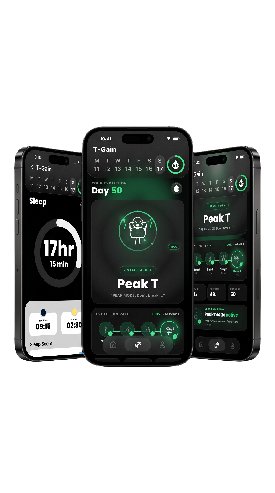
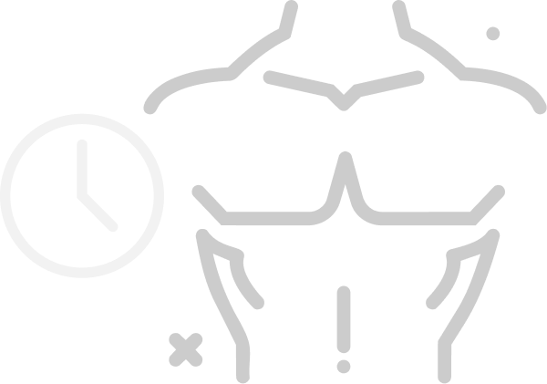
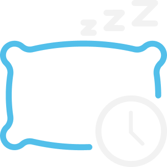

T-Gain is the daily ritual built for men who want to feel sharper, stronger, and more alive — naturally. Four pillars. One quiet streak. Real results.

The science is boring. The habits aren't. T-Gain reduces optimization to four daily moves you can actually stick to.

Compound lifts, push days, leg days — logged in seconds, no spreadsheet required.
Track the foods that actually move the needle: red meat, eggs, leafy greens, nuts.

Log nights, spot patterns, protect the seven hours your body depends on.
Box-breathing, sunlight, and pro tips that bring stress down and clarity up.
Quiet, focused, no streak-shaming. Just the inputs that compound.
A clean checklist of the small actions that keep your progress consistent. Hit them and move on with your day.
Weekly and monthly views of training, fueling, sleeping, and recharging — so you can spot what's working.
Quit smoking. Cut excess alcohol. Get sunlight. Lift heavy. Sleep deeper. The unglamorous fundamentals.
No drill-sergeant notifications. No supplements to buy. Just the work.
"I stopped trying to overhaul my life and just hit the four pillars every day. Three months in, I feel like a different person."
"Finally an app that doesn't try to sell me powder. It just tracks the basics — and the basics are what worked."
"The sleep log alone was worth it. Realized I was averaging 5.5 hrs. Now I'm at 7.5 and lifting heavier than ever."
No. T-Gain is a habit and lifestyle tracker built around well-known levers — training, nutrition, sleep, and stress. It is not medical advice and does not replace a doctor.
Under two minutes. Log your training, fuel, sleep, and one recharge habit. We deliberately built it to be the lightest thing on your home screen.
Never. T-Gain doesn't sell supplements, programs, or coaching. The whole product is built around the things you can already do with a barbell, a kitchen, and a bed.
Yes. Your logs are yours. We don't sell data and we don't share it with advertisers. See our privacy policy for the full breakdown.
Free to start, with an optional Pro upgrade that unlocks deeper analytics and the full pro-tips library.
Free to start. Takes 60 seconds. Your future self will notice.